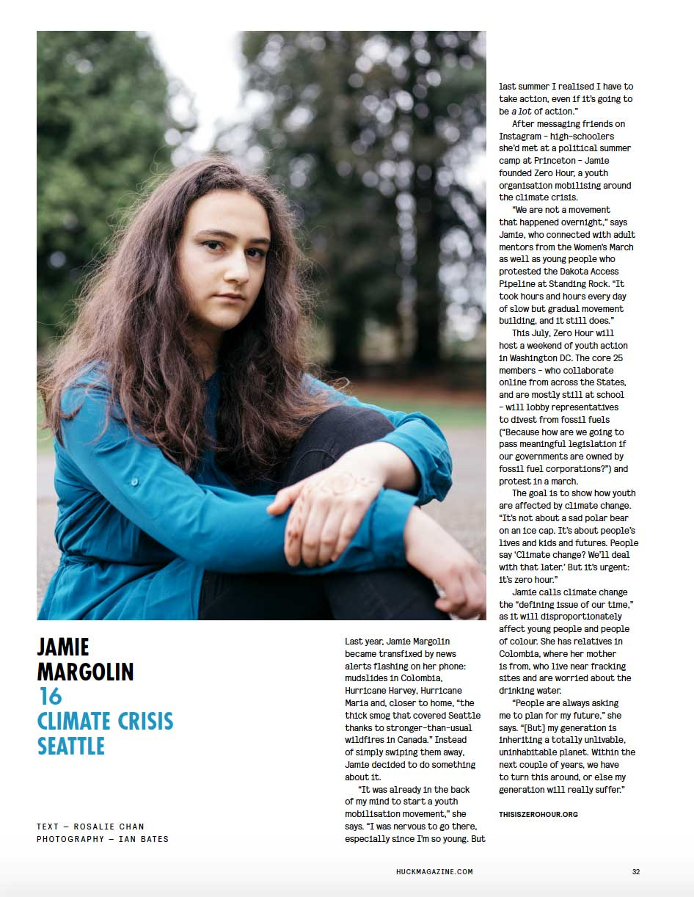

The more media coverage, the better. Help us amplify the voices of youth in climate movement by getting in contact with our media rep, Bella, at media@thisiszerohour.org
At the GCAS in San Francisco, the Youth Have A Voice—But Only One - Pacific
Standard
Meet the Teenagers Leading a Climate Change Movement - The New York Times
18 for 18: Young people use their vote to call for change on climate policy -
ABC News
Meet the young refugee behind Zero Hour’s climate platform - Grist
Meet young activists of color who want to combat climate change and save the
planet - USA Today
 The Teen-Agers Fighting for Climate Justice - The New Yorker
The Teen-Agers Fighting for Climate Justice - The New Yorker
Arielle Martinez Cohen and Zero Hour in their battle against climate change - LA
Times
Can
‘climate kids’ take on governments and win? - CNN
Teens Are Leading 3 Days of Climate Change Activism in D.C. With Zero Hour -
Teen Vogue
#26
Zero Hour | How Then Shall We Live - No Place Like Home
Climate change creates another flood—of youth activists - The Baltimore
Sun
The teen activists shaping our future for the better - Huck Magazine
À tout Jamie - Stylist France
Jamie Margolin, Climate Crisis - Huck Magazine

This 16-year-old is saving
the world—and she wants your help - Awesomeness TV
Dear leaders: You’ve failed your children on climate change - CNN
On
the Scene – Episode Two: Zero Hour - Climate Reality Podcasts
Gov. Rick Scott should listen to students on climate change - SunSentinel
Young Americans want to save you from climate change - ThinkProgress
This 16-Year-Old Founded a “Movement of Unstoppable Youth” to Save the
Planet - Mother Jones
Young Americans Want to Save You From Climate Change - Nexus Media
Teens are marching for justice around the world. Next up: Climate change. -
Grist
How connected students are wielding the internet to fight for gun control and climate
protection - GeekWire
Why I Am A 16-Year-Old Climate Activist - Refinery29
America’s Next Big Climate March Will Be Led by Teens - Earther
Meet the Teens Schooling Us on Climate Action - Rolling Stone
Meet
the teens schooling us on climate - Grist
10 things you’ve always wanted to ask a 16-year-old suing the government over climate
change - Greenpeace